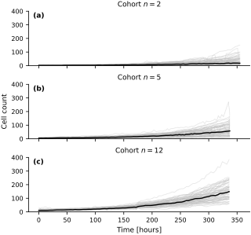
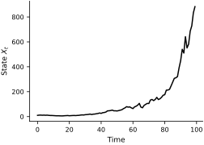
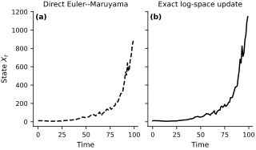
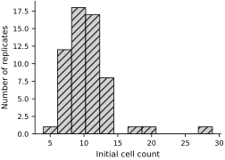
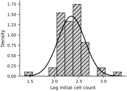
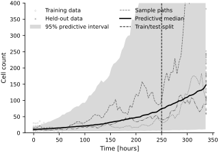

Stochastic exponential growth#
Stochastic exponential growth, also called geometric Brownian motion (GBM), is a simple model for a positive quantity that grows or decays while experiencing random fluctuations. The model is
where \(X_t\) is the state at time \(t\), \(\mu\) is its deterministic growth rate, \(\sigma>0\) controls the strength of the fluctuations, and \(W_t\) is a Wiener process.
We use a processed table of cancer-cell population trajectories reported by Johnson et al. (2019). That study develops richer discrete population models, including an Allee effect. Our purpose is narrower: to use the measurements to examine what this deliberately simple continuous GBM baseline can and cannot reproduce.
Data and model#
The processed table contains three cohorts labeled \(n=2\), \(n=5\), and \(n=12\). These are cohort labels rather than exact initial states: individual trajectories can begin at nearby cell counts. Each cohort contains repeated population measurements over time. The trajectories display both growth and substantial experiment-to-experiment variation.
cohorts = ((t2, P2, "$n=2$"), (t5, P5, "$n=5$"), (t12, P12, "$n=12$"))
fig, axs = new_figure("full_tall", nrows=3, sharex=True, sharey=True)
for ax, (t_cohort, P_cohort, cohort_label) in zip(axs, cohorts):
ax.plot(
t_cohort, P_cohort, color="0.72", linewidth=0.45, alpha=0.65,
rasterized=True,
)
ax.plot(
t_cohort, np.nanmedian(np.asarray(P_cohort), axis=1),
color="black", linewidth=1.4,
)
ax.set_title(f"Cohort {cohort_label}")
ax.set_ylim(0, 400)
axs[1].set_ylabel("Cell count")
axs[-1].set_xlabel("Time [hours]")
label_panels(axs)
finalize_axes(axs, keep_box=False)
plt.show()
{kind=link}

Fig. 59 Cancer-cell population trajectories in the three cohorts of the processed data. Thin gray lines show individual replicates, and the black line is the pointwise median.#
Direct-state approximation#
For a time step \(h>0\), Euler–Maruyama approximates the GBM dynamics by
where \(Z\sim\mathcal{N}(0,1)\). Equivalently, the one-step increment satisfies
The superscript emphasizes that this is an approximation. A sufficiently large negative draw can make the Euler–Maruyama state negative even though the exact GBM remains positive. The following function implements this direct-state approximation.
# Define the Euler-Maruyama method
def euler_maruyama_step(carry, dt):
"""Perform a single step of the Euler-Maruyama method."""
# Unpack the state
key, mu, sigma, x0 = carry
# Split the random key, we want iid samples each step
key, subkey = jr.split(key)
# Compute the drift term
drift = mu * x0 * dt
# Compute the diffusion term
diffusion = sigma * x0 * jnp.sqrt(dt) * jr.normal(subkey)
x1 = x0 + drift + diffusion
return (key, mu, sigma, x1), x1
We first simulate one path with illustrative parameter values.
# Define the parameters and use a local key for reproducible output.
initial_key, path_key = jr.split(jr.PRNGKey(0))
X_0 = jr.uniform(initial_key, (), minval=1, maxval=10)
mu = 0.05
sigma = 0.1
time = jnp.arange(0, 100, 1.0)
dt = jnp.diff(time, axis=0)
init_carry = (path_key, mu, sigma, X_0)
_, X_t = lax.scan(euler_maruyama_step, init_carry, dt)
all_X = jnp.concatenate((jnp.atleast_1d(X_0), X_t))
# Plot the results
fig, ax = new_figure("half_standard")
ax.plot(time, all_X, color="black")
ax.set_xlabel("Time")
ax.set_ylabel("State $X_t$")
finalize_axes(ax, keep_box=False)
plt.show()
{kind=link}

Fig. 60 One Euler–Maruyama path for the direct-state GBM approximation with illustrative parameters.#
Exact simulation in log space#
The direct-state approximation is useful for illustrating Euler–Maruyama, but GBM has an exact transition. Define
Applying Itô’s formula, as introduced in the preceding section, gives
Consequently, for \(h>0\) and \(x>0\),
Equivalently, \(X_{t+h}\mid X_t=x\) is lognormally distributed. The log-space update is therefore exact at the selected time points when \(\mu\) and \(\sigma\) are constant, and exponentiation preserves positivity. We compare it with direct-state Euler–Maruyama using the same initial value and Gaussian innovations.
# Exact one-step update for the constant-coefficient log process
def exact_log_step(carry, dt):
"""Advance log-GBM exactly over one time interval."""
# Unpack the state
key, mu, sigma, y0 = carry
# Split the random key for a fresh normal sample each step
key, subkey = jr.split(key)
# Compute the drift in log-space
drift = (mu - 0.5 * sigma**2) * dt
# Compute the diffusion term in log-space
diffusion = sigma * jnp.sqrt(dt) * jr.normal(subkey)
# Update Y
y1 = y0 + drift + diffusion
return (key, mu, sigma, y1), y1
Y_0 = jnp.log(X_0)
init_carry_log = (path_key, mu, sigma, Y_0)
_, Y_t = lax.scan(exact_log_step, init_carry_log, dt)
all_Y = jnp.concatenate((jnp.atleast_1d(Y_0), Y_t))
X_recovered = jnp.exp(all_Y)
# Plot the results side by side
fig, axs = new_figure("full_landscape", ncols=2, sharey=True)
axs[0].plot(time, all_X, color="black", linestyle="--")
axs[0].set_title("Direct Euler--Maruyama")
axs[0].set_xlabel("Time")
axs[0].set_ylabel("State $X_t$")
axs[1].plot(time, X_recovered, color="black", linestyle="-")
axs[1].set_title("Exact log-space update")
axs[1].set_xlabel("Time")
label_panels(axs)
finalize_axes(axs, keep_box=False)
plt.show()
{kind=link}

Fig. 61 Direct-state Euler–Maruyama (left) and the exact log-space update (right), driven by the same Gaussian innovations. The two discretizations need not give identical paths.#
Parameter estimation#
We now estimate the constant parameters by maximum likelihood. We assume that each replicate is an independent GBM observed exactly, without measurement error, on a common time grid. All fitted values must be positive; GBM cannot reach or cross zero. Because the observations are irregularly spaced, every time increment must be retained.
Starting from the original stochastic exponential growth model:
Apply the log-transformation:
By Itô’s lemma:
Suppose a replicate is observed at \(t_0,\ldots,t_N\), and define \(\theta = \mu - \tfrac{\sigma^2}{2}\). For \(i=0,\ldots,N-1\), the exact log increments satisfy
The likelihood for the observed increments \(\Delta Y_i\) is:
Taking the negative log-likelihood:
For parameter estimation, constants like \(2\pi\) do not affect the minimizer, so focusing on the terms involving \(\theta\) and \(\sigma\), we have:
For constant \(\mu\) and \(\sigma\), this objective has closed-form maximum-likelihood estimates. Time- or state-dependent coefficients require a different transition model and are outside this example.
Estimating \(\theta\)#
Take the derivative with respect to \(\theta\):
Set the derivative equal to zero to find the maximum-likelihood estimate (MLE) \(\hat{\theta}\):
Thus:
Estimating \(\sigma\)#
Now differentiate with respect to \(\sigma^2\):
Set this equal to zero:
Multiply both sides by \((\sigma^2)^2\):
Therefore:
Recall \(\theta = \mu - \frac{\sigma^2}{2}\). Solving for \(\mu\):
MLEs in log space#
We have derived:
Thus, by working in log-space, we obtain simple closed-form analytical solutions for \(\mu\) and \(\sigma\).
Multiple replicates#
If we have \(R\) independent replicates, each replicate \(r=1,\dots,R\) provides increments \(\{\Delta Y_i^{(r)}\}_{i=0}^{N-1}\) over the same time intervals \(\{\Delta t_i\}_{i=0}^{N-1}\).
The likelihood contributions from each replicate are independent, so their joint likelihood is the product of individual replicate likelihoods, and the joint log-likelihood is the sum of individual log-likelihoods.
Following the same steps as the single-replicate derivation, but now summing over all replicates, we arrive at the following MLEs:
and as before,
Thus, by pooling information from all \(R\) replicates, we again obtain closed-form analytical solutions for \(\mu\) and \(\sigma\) when working in log-space.
def estimate_params_log(Y, t):
"""
Estimate mu and sigma for the stochastic exponential growth model in log-space
given multiple replicates.
Parameters
----------
Y : jnp.ndarray
A 2D array of shape (N+1, R), where each column corresponds to log(X_t) values
for a single replicate observed at the same time points.
t : jnp.ndarray
A 1D array of shape (N+1,) containing the time points from t_0 through t_N.
Returns
-------
mu_hat : float
The MLE estimate of mu.
sigma_hat : float
The MLE estimate of sigma.
"""
# Number of increments (N) and replicates (R)
N = Y.shape[0] - 1
R = Y.shape[1]
# Compute time increments Δt_i
dt = t[1:] - t[:-1] # shape (N,)
# Compute increments in Y
dY = Y[1:, :] - Y[:-1, :] # shape (N, R)
# Sum over all increments and all replicates
total_dY = jnp.sum(dY) # sum over i and r
total_dt = jnp.sum(dt) # sum over i
# Estimate theta = mu - sigma^2/2
theta_hat = total_dY / (R * total_dt)
# Compute residuals for sigma^2 estimation
dt_expanded = dt[:, None] # shape (N, 1)
residuals = dY - theta_hat * dt_expanded
sigma_sq_hat = jnp.sum((residuals**2) / dt_expanded) / (N * R)
sigma_hat = jnp.sqrt(sigma_sq_hat)
# Recover mu
mu_hat = theta_hat + sigma_sq_hat / 2
return mu_hat, sigma_hat
We fit the \(n=12\) cohort, whose recorded counts are strictly positive. The \(n=2\) cohort contains zeros, so this log-space workflow cannot be applied there without a model that explicitly represents extinction or observation error. Observations before 250 hours are used for estimation; later observations are reserved for an out-of-time population predictive check. This check restarts simulated trajectories at time zero and is not a forecast conditioned on each replicate’s state at 250 hours.
# Separate the data into training and testing sets
train_mask = t12 < 250
test_mask = t12 >= 250
train_t12 = t12[train_mask]
train_P12 = P12[train_mask]
test_t12 = t12[test_mask]
test_P12 = P12[test_mask]
# Fit the model to only the training data
mu12_train, sigma12_train = estimate_params_log(jnp.log(train_P12), train_t12)
print(f"The estimated mu for n=12 on the training set is: {mu12_train:.3f}")
print(f"The estimated sigma for n=12 on the training set is: {sigma12_train:.3f}")
The estimated mu for n=12 on the training set is: 0.010
The estimated sigma for n=12 on the training set is: 0.073
Initial-state distribution#
The \(n=12\) cohort label does not mean that every replicate begins at exactly 12 cells. To reproduce the variation at the start of the experiment, we first inspect the observed initial states.
data_IC = P12[0] # Observed initial states
# Plot a histogram of the IC
fig, ax = new_figure("half_standard")
ax.hist(data_IC, bins=12, facecolor="0.82", edgecolor="black", hatch="///")
ax.set_xlabel("Initial cell count")
ax.set_ylabel("Number of replicates")
finalize_axes(ax, keep_box=False)
plt.show()
{kind=link}

Fig. 62 Observed initial cell counts in the \(n=12\) cohort.#
The observed initial counts range from 4 to 29 cells. We approximate their logarithms by a Gaussian distribution. Exponentiating a draw from this fitted Gaussian produces a positive initial state for each simulated trajectory.
log_IC = jnp.log(data_IC) # Log-transform the initial states
IC_mean = jnp.mean(log_IC)
IC_std = jnp.std(log_IC)
# Plot a histogram of the log-transformed IC with the normal distribution
fig, ax = new_figure("half_standard")
ax.hist(
log_IC, bins=12, facecolor="0.82", edgecolor="black",
hatch="///", density=True,
)
ax.set_xlabel("Log initial cell count")
ax.set_ylabel("Density")
x = jnp.linspace(jnp.min(log_IC), jnp.max(log_IC), 100)
y = jss.norm.pdf(x, IC_mean, IC_std)
ax.plot(x, y, color="black", linewidth=1.5)
finalize_axes(ax, keep_box=False)
plt.show()
{kind=link}

Fig. 63 Logarithms of the observed initial cell counts (hatched histogram) and their fitted Gaussian density (solid curve).#
Population predictive check#
We now draw initial states from this fitted distribution and propagate 1,000 trajectories with the exact log-space transition. The estimated parameters are held fixed, so the resulting interval represents initial-state and process variation but not parameter uncertainty.
# Simulate exact log-space transitions over the full time grid.
dt_full = jnp.diff(t12)
n_samples = 1000
initial_key, innovation_key = jr.split(jr.PRNGKey(2025))
Y0_samples = IC_mean + IC_std * jr.normal(initial_key, (n_samples,))
innovations = jr.normal(innovation_key, (len(dt_full), n_samples))
theta12_train = mu12_train - 0.5 * sigma12_train**2
log_increments = (
theta12_train * dt_full[:, None]
+ sigma12_train * jnp.sqrt(dt_full)[:, None] * innovations
)
log_paths = jnp.concatenate(
(Y0_samples[None, :], Y0_samples[None, :] + jnp.cumsum(log_increments, axis=0)),
axis=0,
)
X12_sims = jnp.exp(log_paths)
# Compute summary statistics
X12_median = jnp.median(X12_sims, axis=1)
X12_lower = jnp.quantile(X12_sims, 0.025, axis=1)
X12_upper = jnp.quantile(X12_sims, 0.975, axis=1)
# Plot the results
fig, ax = new_figure("full_standard")
ax.scatter(
np.repeat(np.asarray(train_t12), train_P12.shape[1]), np.asarray(train_P12).ravel(),
marker="o", s=4, facecolors="none", edgecolors="0.55", linewidths=0.4,
alpha=0.55, rasterized=True, label="Training data",
)
ax.scatter(
np.repeat(np.asarray(test_t12), test_P12.shape[1]), np.asarray(test_P12).ravel(),
marker="x", s=4, color="0.15", linewidths=0.45, alpha=0.6,
rasterized=True, label="Held-out data",
)
ax.fill_between(
t12, X12_lower, X12_upper, color="0.85", linewidth=0,
label="95% predictive interval",
)
for i, linestyle in enumerate(("--", ":", "-.")):
ax.plot(
t12, X12_sims[:, i], color="0.35", linestyle=linestyle,
linewidth=0.75, label="Sample paths" if i == 0 else None,
)
ax.plot(t12, X12_median, color="black", linewidth=1.6, label="Predictive median")
ax.axvline(250, color="black", linestyle="--", linewidth=0.9, label="Train/test split")
ax.set_xlabel("Time [hours]")
ax.set_ylim(0, 400)
ax.set_ylabel("Cell count")
ax.legend(ncol=2, loc="upper left")
finalize_axes(ax, keep_box=False)
plt.show()
{kind=link}

Fig. 64 Population predictive check for the \(n=12\) cohort. The model is fitted before 250 hours; observations after the dashed line are held out. The gray band is a 95% fitted-parameter predictive interval and therefore excludes parameter uncertainty.#
The predictive median follows the population-level trend, but the simulated sample paths do not resemble individual experimental trajectories. This discrepancy is useful: matching an average trend does not establish that a stochastic model reproduces the underlying dynamics. The richer discrete models compared by Johnson et al. (2019) address biological behavior that this GBM baseline omits.
Exercises#
Starting from the Gaussian transition for \(Y_t=\log X_t\), derive the conditional mean and variance of \(X_{t+h}\mid X_t=x\). Compare their small-\(h\) expansions with the Euler–Maruyama conditional mean and variance.
For a direct Euler–Maruyama step, derive the probability that \(X_{t+h}<0\) when \(X_t=x>0\). How does this probability depend on \(h\), \(\mu\), and \(\sigma\)?
Repeat the predictive check with a different training cutoff. Explain which features of the result reflect initial-state variation, process variation, and the decision to hold the fitted parameters fixed.